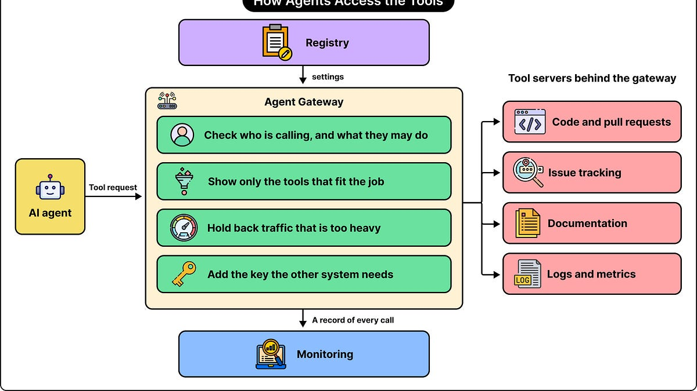
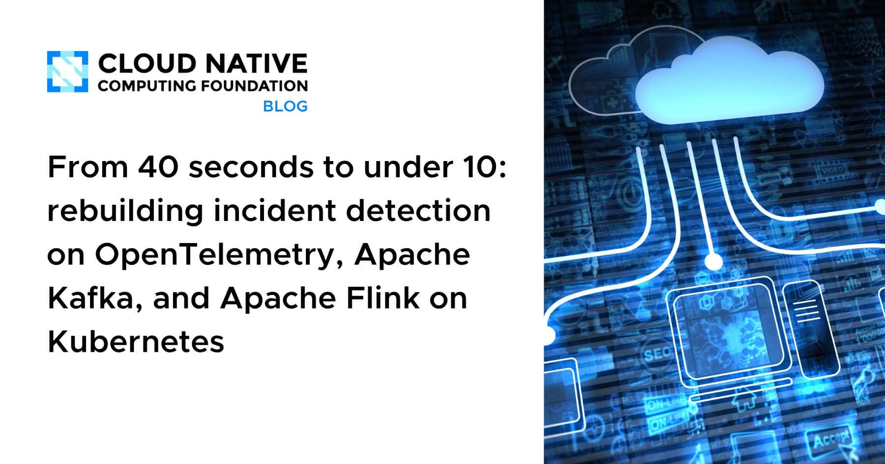
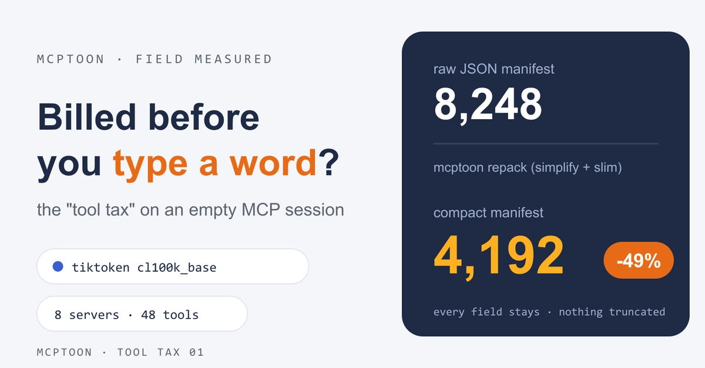
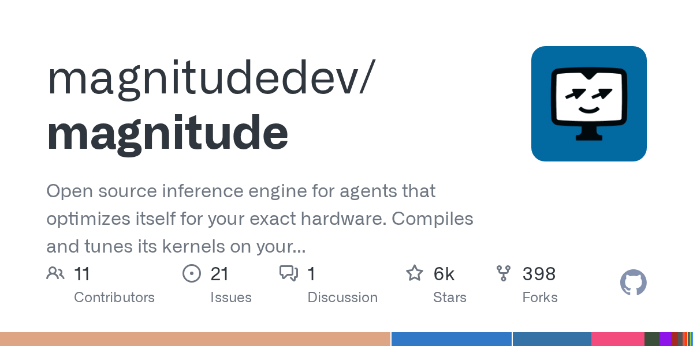
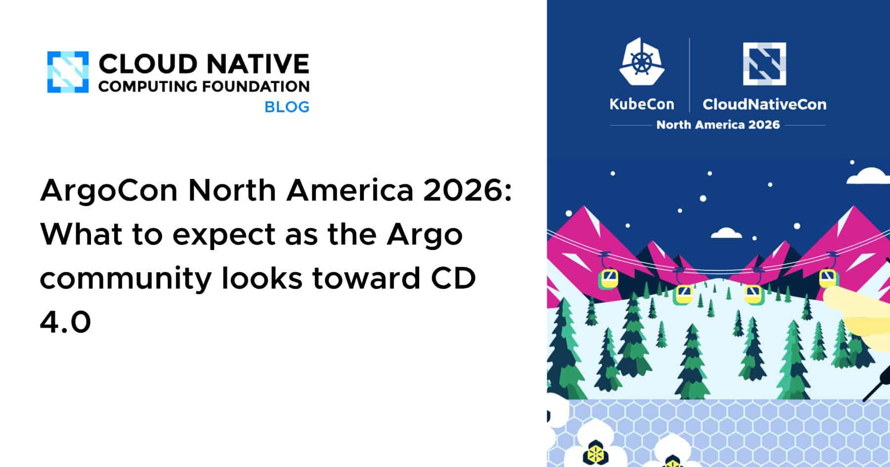
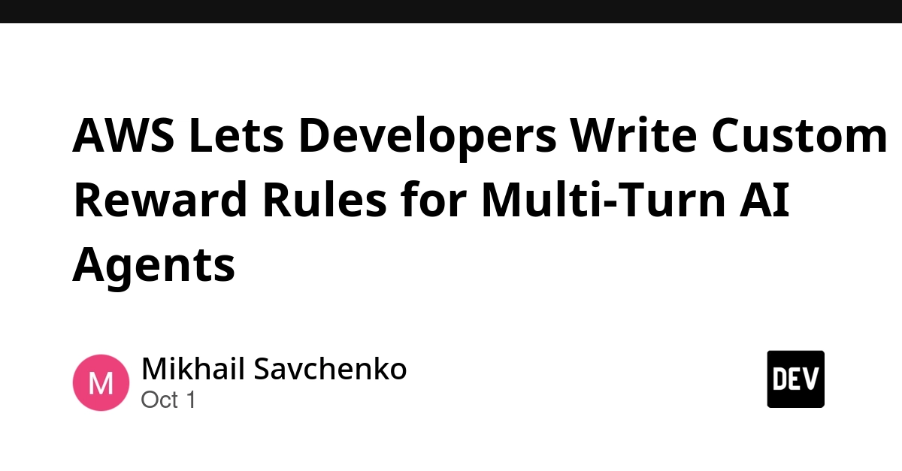
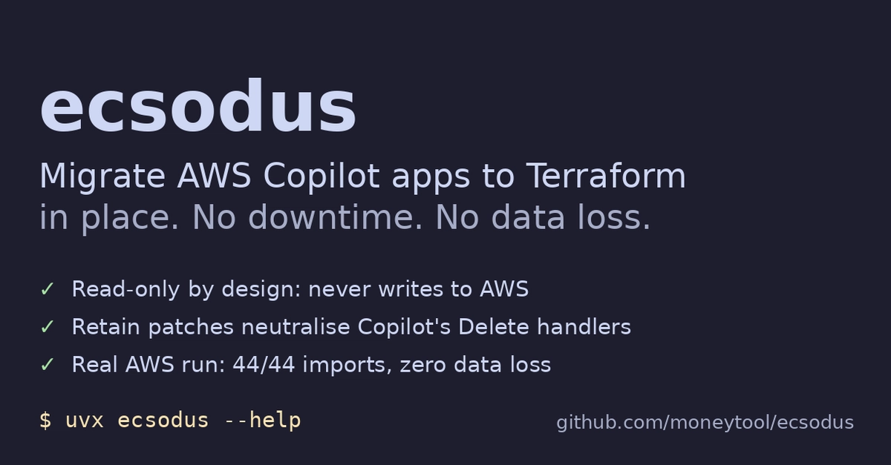
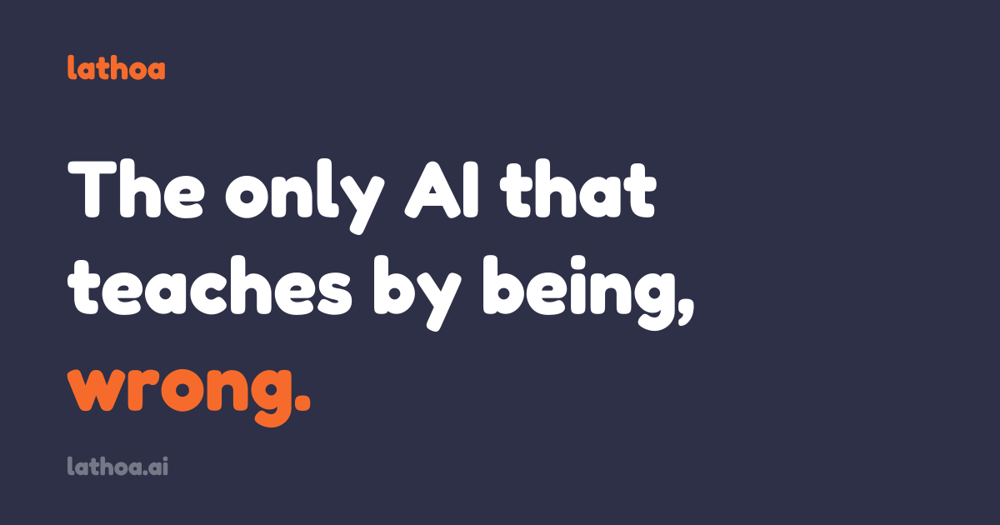
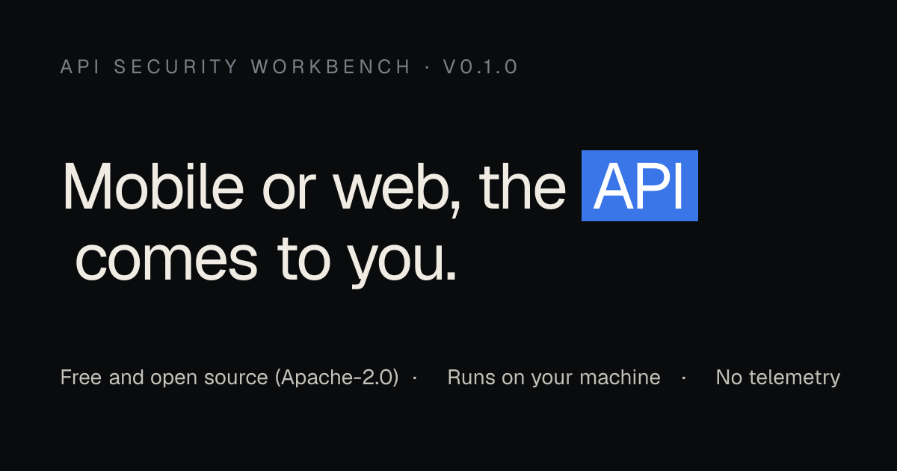
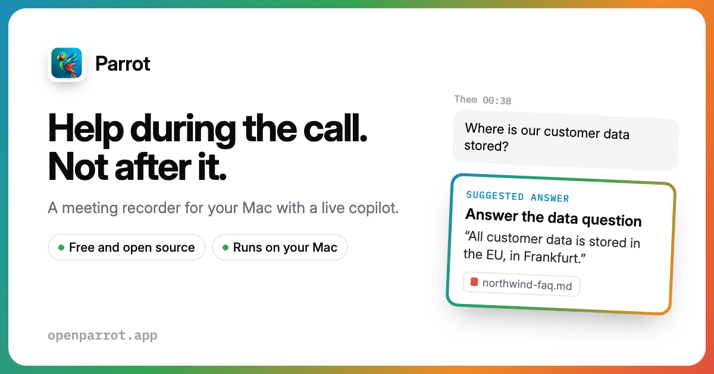

🔥 Top 3 (must read)
How DoorDash Built a Toolbox for AI Agents
DoorDash built one gateway that gives all its AI agents a shared set of tools. The article walks through the design choices the team made along the way. Why it matters: this is a real system-design case study for how a large team gives agents safe access to internal services, which is the problem you will face when your team moves past single coding assistants.

From 40 seconds to under 10: rebuilding incident detection on OpenTelemetry, Kafka, and Flink on Kubernetes
A small SaaS team rebuilt its incident detection pipeline so monitoring finds problems before customers do. Detection time dropped from about 40 seconds to under 10. Why it matters: a concrete SRE story with the same stack many teams run on Kubernetes, useful for your own observability planning.

Two Token Bills Before Your Agent Answers: 71,929 for MCP Tools, 1,109,242 for Skills
Before you type one character, your agent already loads every MCP tool schema and every SKILL.md file into context. The author measured both bills and found the skills bill is far bigger than most people expect. Why it matters: if your team uses Claude Code with many MCP servers and skills, this hidden cost affects speed, price, and answer quality.

🛠 Tools & releases
Launch HN: Magnitude (YC S25) – Self-optimizing inference engine for agents
an open inference engine that tunes itself for agent workloads. HN discussion (130 points, 59 comments).

ArgoCon North America 2026: looking toward Argo CD 4.0
the Argo community has started planning Argo CD 4.0. Worth a skim if you deploy with ArgoCD.

🤖 AI for developers
The decisions in my entity resolution pipeline that I still make myself
a developer explains which choices in a data pipeline they keep away from AI help, after an AI-written fix looked right but missed what was in the raw data. Good lesson on where human judgment still wins.
AWS Lets Developers Write Custom Reward Rules for Multi-Turn AI Agents
AWS guidance on defining reward functions for multi-turn agents on Nova Forge. Only relevant if you fine-tune agents yourself.

👔 Engineering & teams
Deleting your AWS Copilot stacks can delete your database. Here's why.
AWS ended Copilot CLI support on June 12, 2026. Teams moving ECS services to Terraform can delete production data if they remove the old CloudFormation stacks the naive way. The post lists four traps to check before the migration.

🎯 For me
The DoorDash agent gateway and the token-bill audit are the two items closest to your work: both are about how a team runs AI agents in a controlled, measurable way.
The incident detection rebuild and the Argo CD 4.0 news hit the DevOps and SRE side of your profile.
No Node.js, React, Flutter, Playwright, or Maestro news today.
💡 App ideas & indie builds
Show HN: Lathoa, a math app for kids where the AI is wrong on purpose
a math tutor that makes mistakes on purpose so kids must catch and fix them. User problem: kids learn more by checking answers than by receiving them. Inspiration: turning the "AI can be wrong" weakness into the core teaching mechanic. HN thread (35 points, 15 comments).

Show HN: A free Burp/Caido alternative with zero setup – API Testing
an API testing and security tool that needs no install or proxy setup. User problem: Burp and Caido are heavy to set up for quick API checks. Inspiration: pick a powerful but hard-to-set-up tool and ship a "zero setup" version. HN thread (30 points, 5 comments).

Show HN: Parrot – Open-Source Smart Meeting Recorder with Co-Pilot on Mac
a Mac app that records meetings locally and adds an AI co-pilot for notes. User problem: people want meeting notes without sending audio to a cloud service. Inspiration: open-source, local-first versions of popular SaaS tools still find an audience. HN thread (27 points, 12 comments).

🎓 Try this
Audit the token cost of your own agent setup. Open a fresh Claude Code session, count the MCP tool schemas and SKILL.md files loaded before your first message, and remove the ones you rarely use. The method is in Two Token Bills Before Your Agent Answers.